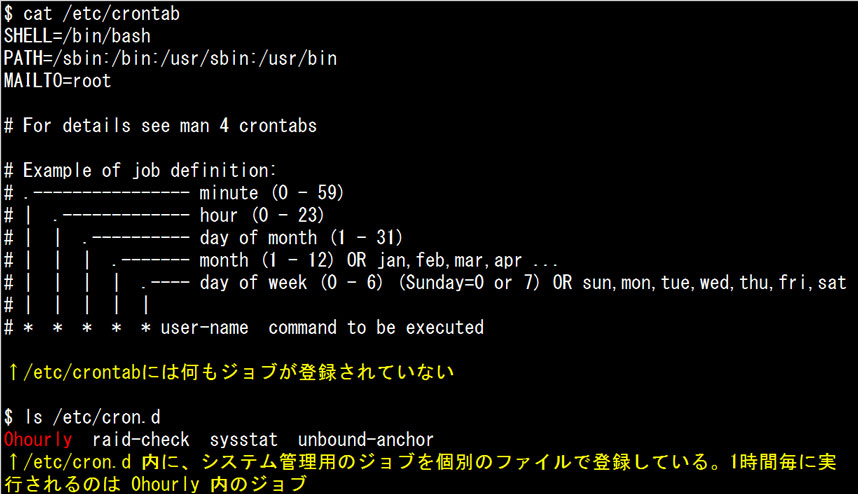
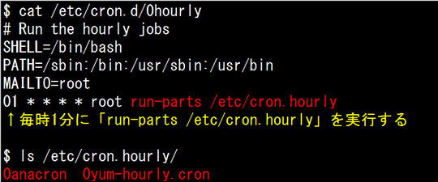
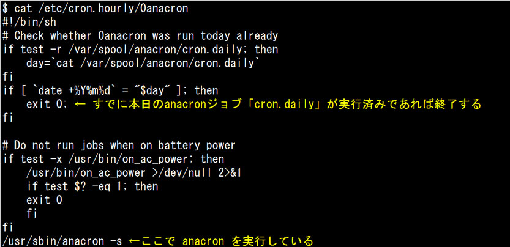
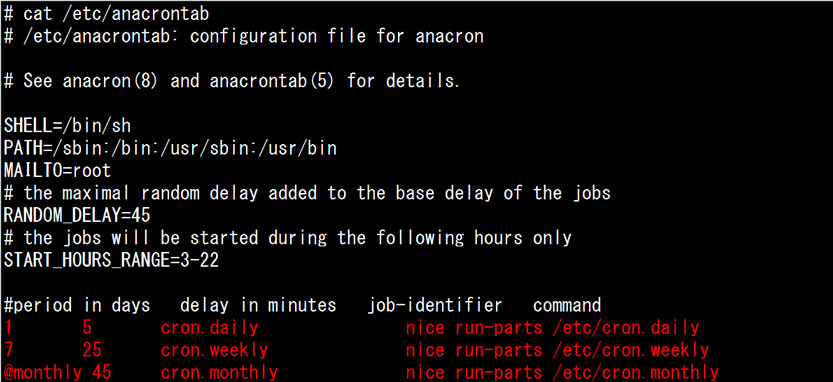
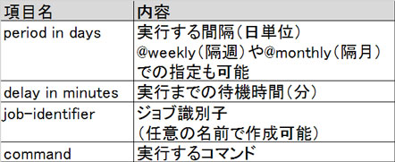
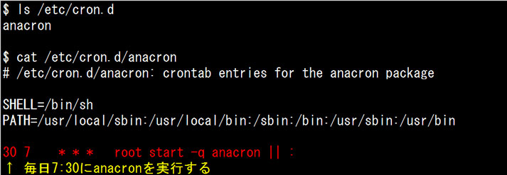
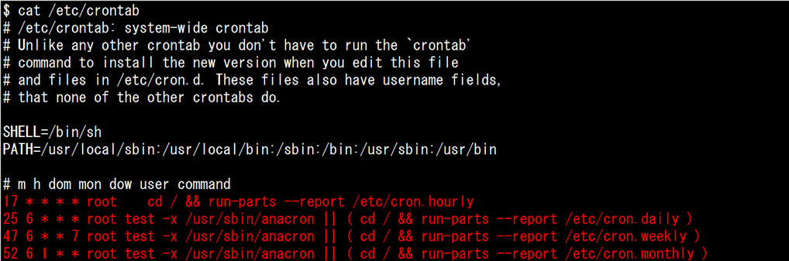
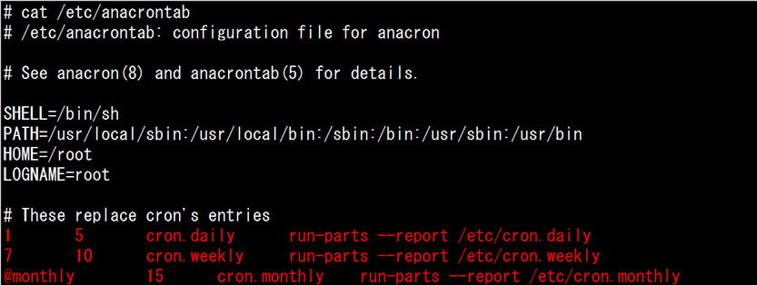

- 問題ID : 15655 ジョブスケジューリング
- 履歴
正解
ジョブ実行タイミングは分単位で指定できる
バックグラウンドで動作し、定期的にジョブを実行する
ジョブ定義は /etc/anacron/anacrontab に記述する
解説
anacronはcronによるジョブスケジューリングを補完するツールです。anacronの特徴は以下の通りです。
・日単位でジョブを実行する
・実行履歴を管理しており、未実行のジョブを検出できる
・デーモン化（バックグラウンド実行）しないため、定期的に実行する必要がある。主にcrondによって実行される。
・ジョブ定義ファイルは /etc/anacrontab
選択肢を確認すると、以下の3つは anacron の説明として正しくないことがわかります。
・ジョブ実行タイミングは分単位で指定できる
ジョブ実行タイミングは分単位では設定できません。
・バックグラウンドで動作し、定期的にジョブを実行する
anacron はデーモン化（バックグラウンド実行）しません。バックグラウンドで動作し、定期的にジョブを実行するのは crond です。
・ジョブ定義は /etc/anacron/anacrontab に記述する
ジョブ定義ファイルは /etc/anacrontab です。
よって正解は
・ジョブ実行タイミングは分単位で指定できる
・バックグラウンドで動作し、定期的にジョブを実行する
・ジョブ定義は /etc/anacron/anacrontab に記述する
です。
その他の選択肢は anacron について正しく説明しています。
参考
anacronはcronによるジョブスケジューリングを補完するツールです。anacronの特徴は以下の通りです。
・日単位でジョブを実行する
・実行履歴を管理しており、未実行のジョブを検出できる
・デーモン化（バックグラウンド実行）しないため、定期的に実行する必要がある。主にcrondによって実行される。
・ジョブ定義ファイルは /etc/anacrontab
crondからのanacronの呼び出し方はCentOS7とUbuntu14.04では異なっています。
CentOS7：

1時間おきに実行されるジョブは、以下のように run-parts コマンドで「/etc/cron.hourly」ディレクトリ内の全ファイルを実行します。実行例では、 0anacron と 0yum-hourly.cron を実行します。

1時間おきに実行する 0anacron では、「毎日実行するジョブの実行状況の確認」を行い、未実行の場合 anacron を実行します。

anacron 実行時に参照する設定ファイルは「/etc/anacrontab」です。このファイルはrootユーザーのみが読み書きできるようになっています。

一番下の3行が実行するジョブです。各行の指定項目は左から以下のようになっています。

実 行履歴の管理用として「/var/spool/anacron」配下にジョブ識別子に指定した名前（cron.daily、cron.weekly、 cron.monthly）のファイルが作成され、そのファイルに当該ジョブを実行した日付が記録されるようになっています。
anacron の実行時に実行履歴の管理用ファイルに記録されている、当該ジョブを実行した日付と現在時刻の日付間隔を確認し、period in days以上間が空いていれば command が実行されます。command は「/etc/anacrontab」の以下のタイミング設定に従って実行されます。
・各ジョブごとの delay in minutes：anacron 実行時からの起動待機時間（分）
・RANDOM_DELAY：「各ジョブごとの delay in minutes」にランダムに加えられる待機時間（分）の最大値
・START_HOURS_RANGE：ジョブ実行可能な時間帯を「開始時刻-終了時刻（開始時刻 < 終了時刻）」の形式で0-23（時）の範囲で指定。
例えば「cron.daily」ジョブの実行は
・「/etc/cron.d/0hourly」より、毎時1分にanacronが実行される
・「/var/spool/anacron/cron.daily」を確認し、当日の日付が記録されていれば処理を終了する。当日の日付が記録されていなければ次へ。
・AM3時を過ぎていれば5分待機して command に指定されたコマンドを実行する
・AM3:06（AM3:01＋5分）以降に、最大45分のランダムな待ち時間の後に「nice run-parts /etc/cron.daily」によって、nice値10で「/etc/cron.daily」ディレクトリ内の全ファイルを実行する
・command 実行後に「/var/spool/anacron/cron.daily」に当日の日付を記録する
という処理が行われます。
Ubuntu14.04の場合はもう少しシンプルです。

Ubuntuでは/etc/crontabでジョブの自動実行を定義しています。

最後の4行で自動実行するジョブを定義しており
・毎時17分に、/ に移動後 run-parts コマンドで「/etc/cron.hourly」ディレクトリ内の全ファイルを実行する
・毎日AM6:25に、 /usr/sbin/anacron が存在しなければ / に移動後 run-parts コマンドで「/etc/cron.daily」ディレクトリ内の全ファイルを実行する
・毎週日曜のAM6:47に、 /usr/sbin/anacron が存在しなければ / に移動後 run-parts コマンドで「/etc/cron.weekly」ディレクトリ内の全ファイルを実行する
・毎月1日のAM6:52に、 /usr/sbin/anacron が存在しなければ / に移動後 run-parts コマンドで「/etc/cron.monthly」ディレクトリ内の全ファイルを実行する
ようになっています。なお、 /usr/sbin/anacron が存在していれば、/etc/cron.d/anacronの設定に従い、毎日AM7:30に anacron が実行されます。
毎日のanacronの実行でも、crontabでの自動実行ジョブ設定と同じコマンドを実行するようになっています。
